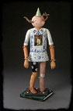
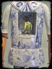
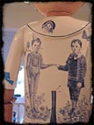
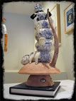
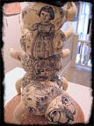
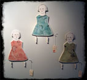
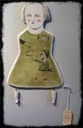

A Naughtea Heart of Pine

A Naughtea Heart of Pine

A Naughtea Heart of Pine

Spoutings of a Cateapillar

Spoutings of a Cateapillar
Red Weldon Sandlin is an outsider in a fringe art form. She hasn't come to ceramics through the more traditional academic or residency routes; she is largely self-taught. This is as it should be, as her work is unique and beyond many ceramic insiders might consider the ceramic tradition in America. Her latest exhibition, "Once Upon a Teapot" (14 August - 12 September, 2004), at the Ferrin Gallery plays with tradition and turns it on its head.
All of her works incorporates references to tea or a teapot in a historical nod to ceramics, perhaps. Playing with words and their meanings in both titles and on the pieces themselves frequently appears. Another reoccurring theme is the use of a book, a classic of children's literature, in the composition of her pieces. Sandlin explains:
"A book contains stories, information, and lessons. A teapot, metaphorically, holds the ideas that are filtered, brewed, steeped, and poured out for fulfillment and understanding."
"A Naughtea Heart of Pine" (2004) is the star of this exhibition. "Naughtea" contains a supremely drawn narrative executed in cobalt blue on the figure's torso, solid craftsmanship, and allusion to a common childhood story, in this case Pinochio, and through these features, "Naughtea" reaches out into one's own earlier experiences, memories, and dreams.
A large part of this regurgitation of experience comes from Sandlin's reminding us of the cruelty of children and how they can be mean even while playing. In this way, one recognizes pin-the-tail-on-the-donkey as a teasing, hurtful game from Pinochio. As the artist reminds us, even the most innocent and picked on have the ability to inflict hurt on others, acknowledged in part in the blue and white "tattoos" on the figure's shirtsleeves - "Good" and "Bad". Once recognized, the work becomes even more disturbing with the figure's wooden nose and leg, while at the same time having the donkey figure in place of the heart. Aside from the immediately obvious recollections of games past, viewers might see the donkey tails surrounding the figure as labels, perhaps the false labels others give us both as children and adults. Some we may desire, most we do not, only coming to this realization after painful experience and time.
Along with "A Naughtea Heart of Pine," the other two major pieces, the ceramic "Spouting of a Cateapillar" and the mixed media "Modestea was Measured in Inches and Other Glorious Mysteries," use teapots, books, and once again, plays on words as consistent themes to engage the viewer.
"Spouting of a Cateapillar," (2004) shows the Sandlin's childlike sense with words. A multi-spouted (each leg being a spout) caterpillar covered in narrative decoration stands on top of a toadstool. The reference to Alice in Wonderland is abundantly clear, as the blue on white "Drink Me" bottle illustrates. The artist leads the viewer along the garden path to examine our customs, high tea, children's thoughts, and adult's rules. By using Carroll's classic story, the artist has provided an easy entry for the unsuspecting viewer into another world.
Like Carroll, Sandlin seems to be questioning the custom of high tea, the formality and properness of the act. In this manner, she points out that a tea is very much about the act and following rules, rules that are often senseless to a child. Is Sandlin pointing out, as she may in "Naughtea Heart of Pine," that there are great, and often contradictory, differences between appearance and truth?
Of course a caterpillar appears to be one thing and becomes something altogether different. A caterpillar is a symbol for change - magical change - an ugly worm becomes a beautiful butterfly. In this case, the transformation is foreshadowed by the flat slab eyes of the "Cateapillar" transforming through surface illustration down its body into the false eyes on the wings of the butterfly he has yet to become. To what end? In Carroll's story, what Sandlin has reiterated, the caterpillar spouts inane "wisdoms"; a butterfly is attractive, but seems of little substance. Perhaps the surface is more important. On it, "Cateapillar" contains a complex personal narrative incorporating features from Alice in Wonderland, Sandlin's personal heroes - Frida Kahlo and Beatrice Wood, the chemical formula for psilocybin, the psychoactive component of "magic" mushrooms, and portraits of the artist as a young girl. Is this a case of surface versus substance? All are steeping in this empty teapot.
The mixed media piece "Modestea was Measured in Inches and Other Glorious Mysteries" (2004) shows an innocent looking young girl holding the proverbial fruit of Eden - an apple - while standing next to an apple shaped teapot illustrated with Adam and Eve, "Modestea" printed on a banner, and a serpent spout. The girls stands solidly on a slim volume. Below the figure is a bingo card painted with a girls pair of underwear. There's one red square with the word "Free" inside. At the bottom, are the word "glorious mysteries" hand written in script. Along the sides are sections of a wooden yardstick.
This poor girl seems to have just been presented with the first hint of the inevitable consequences of growing up. As the pieces of yard stick make clear, someone has recently put upon this girl that skirt length instantly labels one as a "good girl" or a "bad girl." Skirt length, the implied "Modestea," is very important a mother or sister or older friend has told her. However, she does not fully comprehend the logic behind these adult "facts." Meanwhile the apple teapot with snake head spout looks up her dress! Further, the book "On Becoming a Woman" lies unreadable under the girl's feet. Like all of us, this girl has no choice but to fuddle through the innocent end of childhood into the illogically complicated world of an adult. The rules of adulthood are being discovered, but their reasons go unanswered until, perhaps, brought to light by, once again, painful experience.
The final three pieces in the exhibition, while lovely as drawings, are secondary, in the context of the others. "If My Dolls Could Talk" (2003) is composed of three flat slabs of clay reminiscent of cutout paper dolls. The first, "Lessons from Alice" displays the narrative "Beware of strange men in strange places offering strange drinks and a rabbit talking about being late." The second is titled "Taking My Higher Self Out for a Walk." A young girl walks along with a bird leashed by a string flying overhead. It is a simple, childlike idea, where the "higher self". is executed literally. Finally, there is "The Heirloom" with a strange little illustration of a girl with an open bird cage whose dress is also bird cage hoop skirt. The undertone, at least to this viewer, is a loss of innocence and perplexity.
In all of Red Weldon Sandlin's artworks, the initial visual thrill draws the viewer in like a moth to a bulb. Once drawn, the observer is caught within the glow and finds something much more than the overtly stunning energy. In these works, there exists a complex and intriguing melding of surface decoration, references to traditional form, complex personal narrative, cultural history, and through them all greater stories for, and of, us all.
Links
Ferrin Gallery
69 Church Street
Lenox, Massachusetts 01240
Telephone: 413-637-4414
http://www.ferringallery.com
Forrest Snyder
940 Water Street, #5
North Bennington, Vermont 05257
http://www.forrestsnyder.com
Modestea was Measured in Inches and Other Glorious Mysteries

If My Dolls Could Talk

The Heirloom